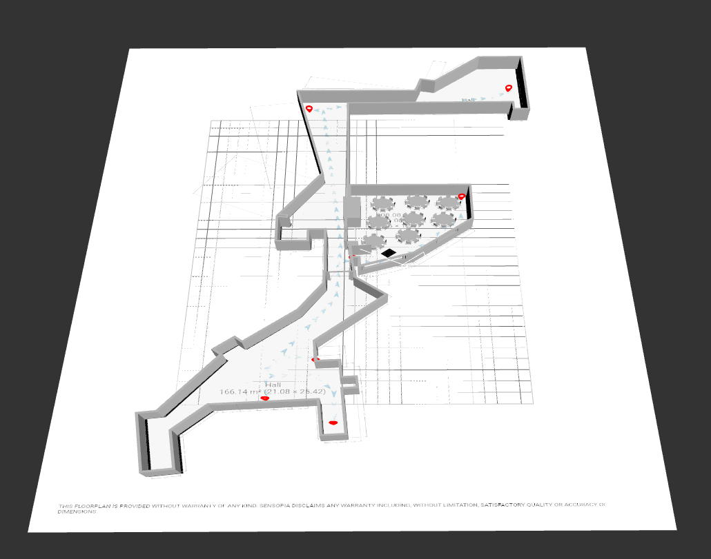

3D Model
ARWAY Web Suite Map
Figma Mockup
Mockup detailing a rough representation of the UX and UI of the final MARPS application and includes features that are mentioned in the scope but may not be completed at the end of this assignment due to the time constraints such as being able to be directed to a specific room, emergency exits or to elevator access for disabled people. The images representing the AR navigation were created using ARCore on an android phone camera app to draw lines in 3D space therefore allowing arrows to point the user to a location in 3D space.
Live MockupFigma Wireframe